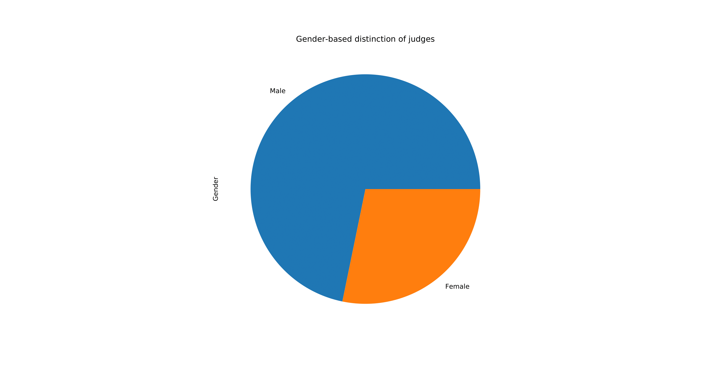
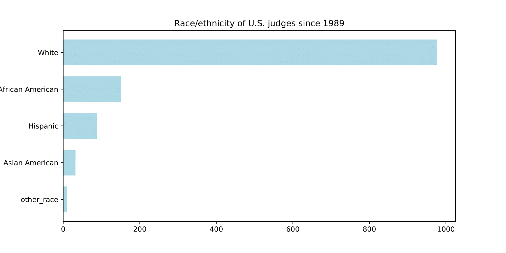

Critics and pundits have been alleging the Republican Party of making the United States Judicial System conservative.
An analysis of data on the United States Courts website shows that it is not true. Democrats appointed a higher number of judges to the U.S. district courts than Republicans since 1989 when George Bush was elected president.
Data shows that the number of judges appointed to district courts by President Donald Trump is lesser than judges appointed by former President Barack Obama in equal time periods. In fact, Donald Trump put the second least number of judges on the Supreme Court during his time in office since 1989.
Judges confirmed
George W Bush appointed the least number of judges for district courts since 1989, followed by current President Donald Trump.
U.S. courts website
Overall, the U.S. courts are still more democratic than republican.
U.S. courts website
If pending 60 nominees are confirmed, Donald Trump will end up putting the third highest number of judges on the U.S. district courts since 1989.
U.S. courts website
Judge appointments to U.S. Court of Appeals
Although Trump didn't send more judges to the district courts, he did send the highest number of judges to Court of Appeals. Experts say having more conservative judges than democratic judges will have a greater impact on the U.S. judicial system. Court of Appeals has powers in terms of making changes to the laws of the land and has the power to overturn judgments by district courts.
U.S. courts website
Pace of confirmation
Trump's nominees took a lot of time to get confirmed and in fact took more time than Obama's second term nominees. Obama's first term nominees took the most time to get confirmed since 1989, followed by Trump's nominees.
U.S. courts website
Composition of judges
An analysis of data shows that there are more male judges compared to female judges and also most of the judges are white.
Gender distinction
Ethnic distinction
U.S. Courts website